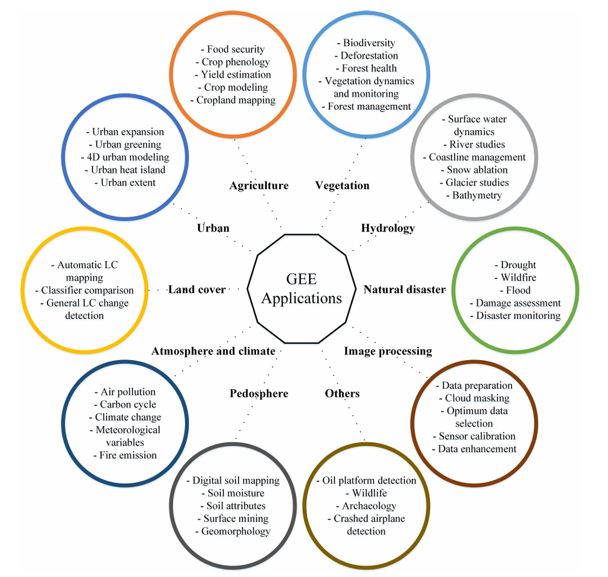

6 Introduction to GEE
6.1 Summary
GEE is a cloud-based platform for planetary-scale environmental data analysis that allows users to access and analyze vast amounts of geospatial data stored on Google’s servers. The platform uses JavaScript for data analysis, and the webpage provides a brief introduction to the necessary JavaScript concepts for using GEE.
6.1.1 Common workflow of GEE
6.1.1.1 Creating Points and Centering the Map:
Create a geographic point using coordinates and then center the map on this point.
ee.Geometry.Point([longitude, latitude])Centers the map on this point with a specified zoom level using
Map.centerObject(point, zoomLevel).
6.1.1.2 Load Landsat Data:
Filter the Landsat dataset by date, using
ee.ImageCollection('LANDSAT/LC09/C02/T1_L2').filterDate('start-date', 'end-date'), to load images from a specific time period.Display the Landsat data on the map and specify which bands to visualize
Map.addLayer(dataset, {bands: ["SR_B4", "SR_B3", "SR_B2"]}, "Landsat 9")
6.1.1.3 Filter and Display Images:
- More advanced filtering options, including filtering by date range, geographic bounds (using the previously created point or polygon), and cloud cover.
6.1.1.4 Deal with Multiple Images:
- Select a single image from the collection, reduce the collection to a single representative image using statistical reducers (e.g., median), and mosaic images to create a composite image.
6.2 Application
According to Meisam’s comprehensive review, GEE is a cloud computing platform developed by Google to address the challenges of analyzing big data from remote sensing systems. It offers a solution by facilitating the processing of large geospatial data sets over extensive areas and long periods, making it a powerful tool for environmental monitoring and analysis. GEE has been particularly useful in applications such as land cover/land use classification, hydrology, urban planning, natural disaster analysis, climate studies, and image processing.

It is capable of handling the vast amount of data from satellites like Landsat and Sentinel, and employs advanced algorithms, including supervised machine learning techniques like Random Forest for image classification tasks.
6.3 Reflection
GEE and R are two powerful tools in processing remote sensing data. With its cloud computing strength and vast built-in datasets, GEE is particularly suitable for large-scale remote sensing data analysis and environmental monitoring. Meanwhile, R offers advantages in flexibility and depth for data analysis, ideal for research requiring complex data processing and customized analysis.
GEE Pros:
Cloud Computing Platform: GEE offers powerful cloud computing capabilities, allowing for the processing of large-scale remote sensing datasets without the need for high-performance personal computers.
Extensive Public Datasets: GEE integrates a vast array of public remote sensing datasets, including Landsat, Sentinel series, etc., enabling direct online processing without the need for downloads.
Efficient Data Processing: GEE has optimized data processing workflows, facilitating rapid data analysis and image processing, especially suited for extensive area and long-term environmental monitoring.
GEE Cons:
Data Privacy: Since data is stored on Google’s servers, there might be concerns for users or institutions with specific data privacy requirements.
Processing Capability Limitations: Although GEE provides robust cloud computing power, some particularly complex custom processing workflows may encounter performance bottlenecks.
R Pros:
Flexibility: R is a software for statistical computing and graphics, offering numerous packages and functions, particularly powerful in data analysis and statistical inference.
Open Source and Free: R is open-source with active community support, providing abundant resources and documentation for learning and use.
Suitable for Custom Analysis: R offers greater flexibility and control for users needing complex data analysis and customized processing.
R Cons:
Data Scale Limitations: Relative to GEE’s cloud computing platform, R’s data processing capabilities are limited to the user’s computer performance, making it unsuitable for extremely large datasets.
Data Preparation: Users need to download and manage remote sensing data themselves, which, compared to GEE’s direct online processing, increases the workload for data preparation.
6.4 Reference
M. Amani et al. (2020). ‘Google Earth Engine Cloud Computing Platform for Remote Sensing Big Data Applications: A Comprehensive Review,’ IEEE Journal of Selected Topics in Applied Earth Observations and Remote Sensing, 13, pp. 5326-5350, doi: 10.1109/JSTARS.2020.3021052.